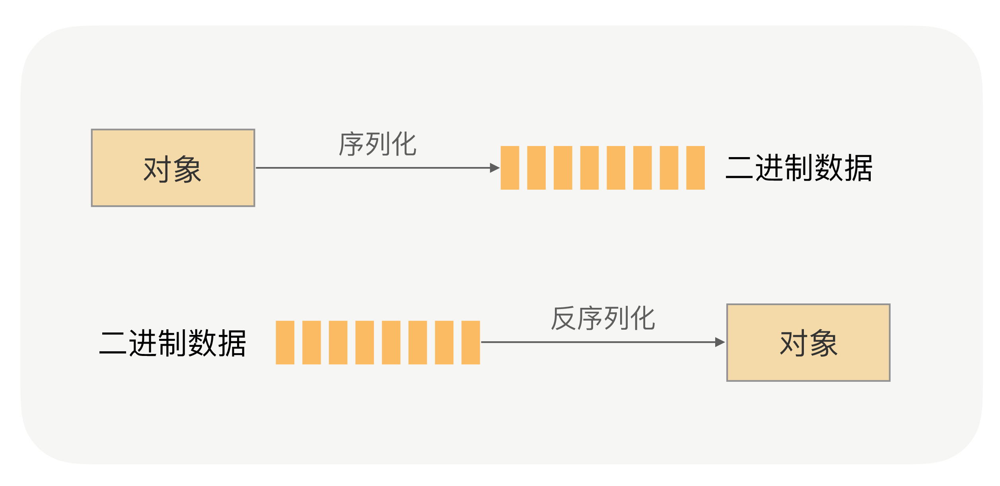
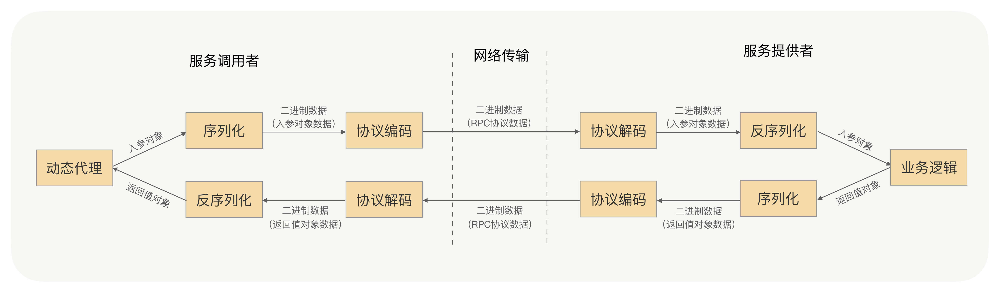
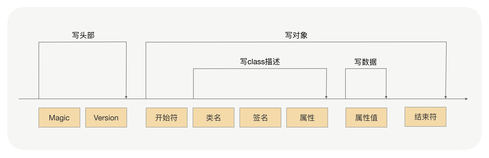
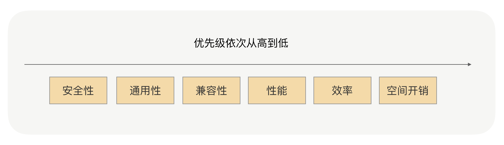

- 00 开篇词 别老想着怎么用好RPC框架，你得多花时间琢磨原理.md.html
- 01 核心原理：能否画张图解释下RPC的通信流程？.md.html
- 02 协议：怎么设计可扩展且向后兼容的协议？.md.html
- 03 序列化：对象怎么在网络中传输？.md.html
- 04 网络通信：RPC框架在网络通信上更倾向于哪种网络IO模型？.md.html
- 05 动态代理：面向接口编程，屏蔽RPC处理流程.md.html
- 06 RPC实战：剖析gRPC源码，动手实现一个完整的RPC.md.html
- 07 架构设计：设计一个灵活的RPC框架.md.html
- 08 服务发现：到底是要CP还是AP？.md.html
- 09 健康检测：这个节点都挂了，为啥还要疯狂发请求？.md.html
- 10 路由策略：怎么让请求按照设定的规则发到不同的节点上？.md.html
- 11 负载均衡：节点负载差距这么大，为什么收到的流量还一样？.md.html
- 12 异常重试：在约定时间内安全可靠地重试.md.html
- 13 优雅关闭：如何避免服务停机带来的业务损失？.md.html
- 14 优雅启动：如何避免流量打到没有启动完成的节点？.md.html
- 15 熔断限流：业务如何实现自我保护_.md.html
- 16 业务分组：如何隔离流量？.md.html
- 17 异步RPC：压榨单机吞吐量.md.html
- 18 安全体系：如何建立可靠的安全体系？.md.html
- 19 分布式环境下如何快速定位问题？.md.html
- 20 详解时钟轮在RPC中的应用.md.html
- 21 流量回放：保障业务技术升级的神器.md.html
- 22 动态分组：超高效实现秒级扩缩容.md.html
- 23 如何在没有接口的情况下进行RPC调用？.md.html
- 24 如何在线上环境里兼容多种RPC协议？.md.html
- 加餐 RPC框架代码实例详解.md.html
- 加餐 谈谈我所经历过的RPC.md.html
- 答疑课堂 基础篇与进阶篇思考题答案合集.md.html
- 结束语 学会从优秀项目的源代码中挖掘知识.md.html
- 捐赠
03 序列化：对象怎么在网络中传输？
你好，我是何小锋。上一讲我讲解了在RPC框架中，如何设计可扩展的、向后兼容的协议，其关键点就是利用好Header中的扩展字段以及Payload中的扩展字段，通过扩展字段向后兼容。
那么承接上一讲的一个重点，今天我会讲解下RPC框架中的序列化。要知道，在不同的场景下合理地选择序列化方式，对提升RPC框架整体的稳定性和性能是至关重要的。
为什么需要序列化？
首先，我们得知道什么是序列化与反序列化。
我们先回顾下[第 01 讲] 介绍过的RPC原理的内容，在描述RPC通信流程的时候我说过：
网络传输的数据必须是二进制数据，但调用方请求的出入参数都是对象。对象是不能直接在网络中传输的，所以我们需要提前把它转成可传输的二进制，并且要求转换算法是可逆的，这个过程我们一般叫做“序列化”。 这时，服务提供方就可以正确地从二进制数据中分割出不同的请求，同时根据请求类型和序列化类型，把二进制的消息体逆向还原成请求对象，这个过程我们称之为“反序列化”。
这两个过程如下图所示：

总结来说，序列化就是将对象转换成二进制数据的过程，而反序列就是反过来将二进制转换为对象的过程。
那么RPC框架为什么需要序列化呢？还是请你回想下RPC的通信流程：

不妨借用个例子帮助你理解，比如发快递，我们要发一个需要自行组装的物件。发件人发之前，会把物件拆开装箱，这就好比序列化；这时候快递员来了，不能磕碰呀，那就要打包，这就好比将序列化后的数据进行编码，封装成一个固定格式的协议；过了两天，收件人收到包裹了，就会拆箱将物件拼接好，这就好比是协议解码和反序列化。
所以现在你清楚了吗？因为网络传输的数据必须是二进制数据，所以在RPC调用中，对入参对象与返回值对象进行序列化与反序列化是一个必须的过程。
有哪些常用的序列化？
那这么看来，你会不会觉得这个过程很简单呢？实则不然，很复杂。我们可以先看看都有哪些常用的序列化，下面我来简单地介绍下几种常用的序列化方式。
JDK原生序列化
如果你会使用Java语言开发，那么你一定知道JDK原生的序列化，下面是JDK序列化的一个例子：
import java.io.*;
public class Student implements Serializable {
//学号
private int no;
//姓名
private String name;
public int getNo() {
return no;
}
public void setNo(int no) {
this.no = no;
}
public String getName() {
return name;
}
public void setName(String name) {
this.name = name;
}
@Override
public String toString() {
return "Student{" +
"no=" + no +
", name='" + name + '\'' +
'}';
}
public static void main(String[] args) throws IOException, ClassNotFoundException {
String home = System.getProperty("user.home");
String basePath = home + "/Desktop";
FileOutputStream fos = new FileOutputStream(basePath + "student.dat");
Student student = new Student();
student.setNo(100);
student.setName("TEST_STUDENT");
ObjectOutputStream oos = new ObjectOutputStream(fos);
oos.writeObject(student);
oos.flush();
oos.close();
FileInputStream fis = new FileInputStream(basePath + "student.dat");
ObjectInputStream ois = new ObjectInputStream(fis);
Student deStudent = (Student) ois.readObject();
ois.close();
System.out.println(deStudent);
}
}
我们可以看到，JDK自带的序列化机制对使用者而言是非常简单的。序列化具体的实现是由ObjectOutputStream完成的，而反序列化的具体实现是由ObjectInputStream完成的。
那么JDK的序列化过程是怎样完成的呢？我们看下下面这张图：

序列化过程就是在读取对象数据的时候，不断加入一些特殊分隔符，这些特殊分隔符用于在反序列化过程中截断用。
- 头部数据用来声明序列化协议、序列化版本，用于高低版本向后兼容
- 对象数据主要包括类名、签名、属性名、属性类型及属性值，当然还有开头结尾等数据，除了属性值属于真正的对象值，其他都是为了反序列化用的元数据
- 存在对象引用、继承的情况下，就是递归遍历“写对象”逻辑
实际上任何一种序列化框架，核心思想就是设计一种序列化协议，将对象的类型、属性类型、属性值一一按照固定的格式写到二进制字节流中来完成序列化，再按照固定的格式一一读出对象的类型、属性类型、属性值，通过这些信息重新创建出一个新的对象，来完成反序列化。
JSON
JSON可能是我们最熟悉的一种序列化格式了，JSON是典型的Key-Value方式，没有数据类型，是一种文本型序列化框架，JSON的具体格式和特性，网上相关的资料非常多，这里就不再介绍了。
他在应用上还是很广泛的，无论是前台Web用Ajax调用、用磁盘存储文本类型的数据，还是基于HTTP协议的RPC框架通信，都会选择JSON格式。
但用JSON进行序列化有这样两个问题，你需要格外注意：
- JSON进行序列化的额外空间开销比较大，对于大数据量服务这意味着需要巨大的内存和磁盘开销；
- JSON没有类型，但像Java这种强类型语言，需要通过反射统一解决，所以性能不会太好。
所以如果RPC框架选用JSON序列化，服务提供者与服务调用者之间传输的数据量要相对较小，否则将严重影响性能。
Hessian
Hessian是动态类型、二进制、紧凑的，并且可跨语言移植的一种序列化框架。Hessian协议要比JDK、JSON更加紧凑，性能上要比JDK、JSON序列化高效很多，而且生成的字节数也更小。
使用代码示例如下：
Student student = new Student();
student.setNo(101);
student.setName("HESSIAN");
//把student对象转化为byte数组
ByteArrayOutputStream bos = new ByteArrayOutputStream();
Hessian2Output output = new Hessian2Output(bos);
output.writeObject(student);
output.flushBuffer();
byte[] data = bos.toByteArray();
bos.close();
//把刚才序列化出来的byte数组转化为student对象
ByteArrayInputStream bis = new ByteArrayInputStream(data);
Hessian2Input input = new Hessian2Input(bis);
Student deStudent = (Student) input.readObject();
input.close();
System.out.println(deStudent);
相对于JDK、JSON，由于Hessian更加高效，生成的字节数更小，有非常好的兼容性和稳定性，所以Hessian更加适合作为RPC框架远程通信的序列化协议。
但Hessian本身也有问题，官方版本对Java里面一些常见对象的类型不支持，比如：
- Linked系列，LinkedHashMap、LinkedHashSet等，但是可以通过扩展CollectionDeserializer类修复；
- Locale类，可以通过扩展ContextSerializerFactory类修复；
- Byte/Short反序列化的时候变成Integer。
以上这些情况，你在实践时需要格外注意。
Protobuf
Protobuf 是 Google 公司内部的混合语言数据标准，是一种轻便、高效的结构化数据存储格式，可以用于结构化数据序列化，支持Java、Python、C++、Go等语言。Protobuf使用的时候需要定义IDL（Interface description language），然后使用不同语言的IDL编译器，生成序列化工具类，它的优点是：
- 序列化后体积相比 JSON、Hessian小很多；
- IDL能清晰地描述语义，所以足以帮助并保证应用程序之间的类型不会丢失，无需类似 XML 解析器；
- 序列化反序列化速度很快，不需要通过反射获取类型；
- 消息格式升级和兼容性不错，可以做到向后兼容。
使用代码示例如下：
/**
*
* // IDl 文件格式
* synax = "proto3";
* option java_package = "com.test";
* option java_outer_classname = "StudentProtobuf";
*
* message StudentMsg {
* //序号
* int32 no = 1;
* //姓名
* string name = 2;
* }
*
*/
StudentProtobuf.StudentMsg.Builder builder = StudentProtobuf.StudentMsg.newBuilder();
builder.setNo(103);
builder.setName("protobuf");
//把student对象转化为byte数组
StudentProtobuf.StudentMsg msg = builder.build();
byte[] data = msg.toByteArray();
//把刚才序列化出来的byte数组转化为student对象
StudentProtobuf.StudentMsg deStudent = StudentProtobuf.StudentMsg.parseFrom(data);
System.out.println(deStudent);
Protobuf 非常高效，但是对于具有反射和动态能力的语言来说，这样用起来很费劲，这一点就不如Hessian，比如用Java的话，这个预编译过程不是必须的，可以考虑使用Protostuff。
Protostuff不需要依赖IDL文件，可以直接对Java领域对象进行反/序列化操作，在效率上跟Protobuf差不多，生成的二进制格式和Protobuf是完全相同的，可以说是一个Java版本的Protobuf序列化框架。但在使用过程中，我遇到过一些不支持的情况，也同步给你：
- 不支持null；
- ProtoStuff不支持单纯的Map、List集合对象，需要包在对象里面。
RPC框架中如何选择序列化？
我刚刚简单地介绍了几种最常见的序列化协议，其实远不止这几种，还有 Message pack、kryo等。那么面对这么多的序列化协议，在RPC框架中我们该如何选择呢？
首先你可能想到的是性能和效率，不错，这的确是一个非常值得参考的因素。我刚才讲过，序列化与反序列化过程是RPC调用的一个必须过程，那么序列化与反序列化的性能和效率势必将直接关系到RPC框架整体的性能和效率。
那除了这点，你还想到了什么？
对，还有空间开销，也就是序列化之后的二进制数据的体积大小。序列化后的字节数据体积越小，网络传输的数据量就越小，传输数据的速度也就越快，由于RPC是远程调用，那么网络传输的速度将直接关系到请求响应的耗时。
现在请你再想想，还有什么因素可以影响到我们的选择？
没错，就是序列化协议的通用性和兼容性。在RPC的运营中，序列化问题恐怕是我碰到的和解答过的最多的问题了，经常有业务会向我反馈这个问题，比如某个类型为集合类的入参服务调用者不能解析了，服务提供方将入参类加一个属性之后服务调用方不能正常调用，升级了RPC版本后发起调用时报序列化异常了…
在序列化的选择上，与序列化协议的效率、性能、序列化协议后的体积相比，其通用性和兼容性的优先级会更高，因为他是会直接关系到服务调用的稳定性和可用率的，对于服务的性能来说，服务的可靠性显然更加重要。我们更加看重这种序列化协议在版本升级后的兼容性是否很好，是否支持更多的对象类型，是否是跨平台、跨语言的，是否有很多人已经用过并且踩过了很多的坑，其次我们才会去考虑性能、效率和空间开销。
还有一点我要特别强调。除了序列化协议的通用性和兼容性，序列化协议的安全性也是非常重要的一个参考因素，甚至应该放在第一位去考虑。以JDK原生序列化为例，它就存在漏洞。如果序列化存在安全漏洞，那么线上的服务就很可能被入侵。

综合上面几个参考因素，现在我们再来总结一下这几个序列化协议。
我们首选的还是Hessian与Protobuf，因为他们在性能、时间开销、空间开销、通用性、兼容性和安全性上，都满足了我们的要求。其中Hessian在使用上更加方便，在对象的兼容性上更好；Protobuf则更加高效，通用性上更有优势。
RPC框架在使用时要注意哪些问题？
了解了在RPC框架中如何选择序列化，那么我们在使用过程中需要注意哪些序列化上的问题呢？
我刚才讲过，在RPC的运营中，我遇到的最多的问题就是序列化问题了，除了早期RPC框架本身出现的问题以外，大多数问题都是使用方使用不正确导致的，接下来我们就盘点下这些高频出现的人为问题。
对象构造得过于复杂：属性很多，并且存在多层的嵌套，比如A对象关联B对象，B对象又聚合C对象，C对象又关联聚合很多其他对象，对象依赖关系过于复杂。序列化框架在序列化与反序列化对象时，对象越复杂就越浪费性能，消耗CPU，这会严重影响RPC框架整体的性能；另外，对象越复杂，在序列化与反序列化的过程中，出现问题的概率就越高。
对象过于庞大：我经常遇到业务过来咨询，为啥他们的RPC请求经常超时，排查后发现他们的入参对象非常得大，比如为一个大List或者大Map，序列化之后字节长度达到了上兆字节。这种情况同样会严重地浪费了性能、CPU，并且序列化一个如此大的对象是很耗费时间的，这肯定会直接影响到请求的耗时。
使用序列化框架不支持的类作为入参类：比如Hessian框架，他天然是不支持LinkedHashMap、LinkedHashSet等，而且大多数情况下最好不要使用第三方集合类，如Guava中的集合类，很多开源的序列化框架都是优先支持编程语言原生的对象。因此如果入参是集合类，应尽量选用原生的、最为常用的集合类，如HashMap、ArrayList。
对象有复杂的继承关系：大多数序列化框架在序列化对象时都会将对象的属性一一进行序列化，当有继承关系时，会不停地寻找父类，遍历属性。就像问题1一样，对象关系越复杂，就越浪费性能，同时又很容易出现序列化上的问题。
在RPC框架的使用过程中，我们要尽量构建简单的对象作为入参和返回值对象，避免上述问题。
总结
今天我们深入学习了什么是序列化，并介绍了如JDK原生序列化、JSON、Hessian以及Protobuf等几种常见的序列化方式。
除了这些基础知识之外，我们重点讲解了在RPC框架中如何去选择序列化协议，我们有这样几个很重要的参考因素，优先级从高到低依次是安全性、通用性和兼容性，之后我们会再考虑序列化框架的性能、效率和空间开销。
这归根结底还是因为服务调用的稳定性与可靠性，要比服务的性能与响应耗时更加重要。另外对于RPC调用来说，整体调用上，最为耗时、最消耗性能的操作大多都是服务提供者执行业务逻辑的操作，这时序列化的开销对于服务整体的开销来说影响相对较小。
在使用RPC框架的过程中，我们构造入参、返回值对象，主要记住以下几点：
- 对象要尽量简单，没有太多的依赖关系，属性不要太多，尽量高内聚；
- 入参对象与返回值对象体积不要太大，更不要传太大的集合；
- 尽量使用简单的、常用的、开发语言原生的对象，尤其是集合类；
- 对象不要有复杂的继承关系，最好不要有父子类的情况。
实际上，虽然RPC框架可以让我们发起远程调用就像调用本地一样，但在RPC框架的传输过程中，入参与返回值的根本作用就是用来传递信息的，为了提高RPC调用整体的性能和稳定性，我们的入参与返回值对象要构造得尽量简单，这很重要。
课后思考
RPC框架在序列化框架的选型上，你认为还需要考虑哪些因素？你还知道哪些优秀的序列化框架，它们又是否适合在RPC调用中使用？
欢迎留言和我分享你的答案和经验，也欢迎你把文章分享给你的朋友，邀请他加入学习。我们下节课再见！
© 2019 - 2023 Liangliang Lee. Powered by gin and hexo-theme-book.